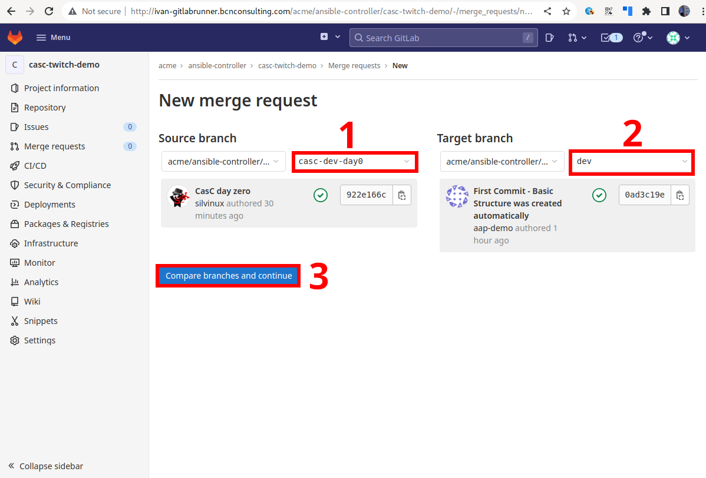
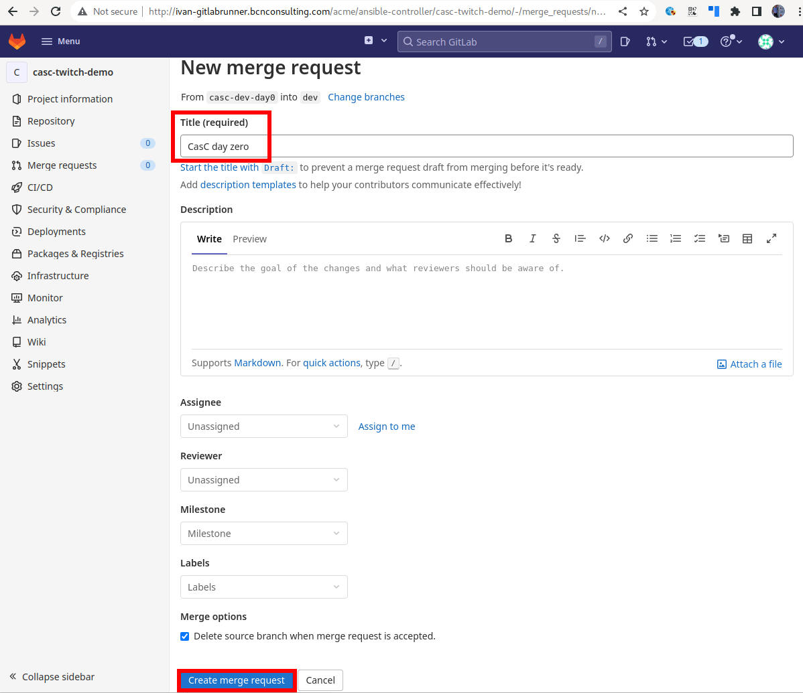
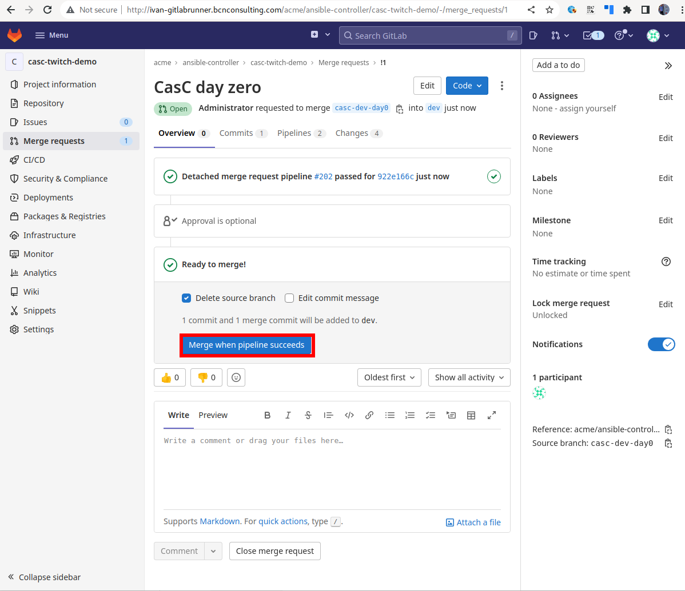
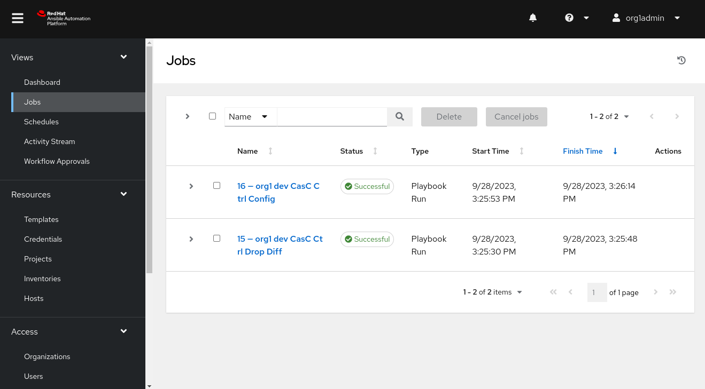
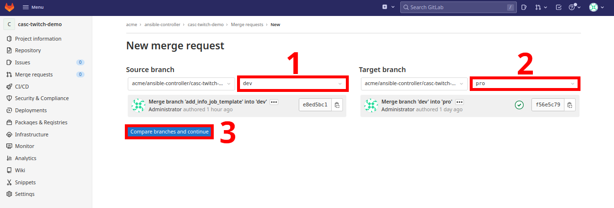
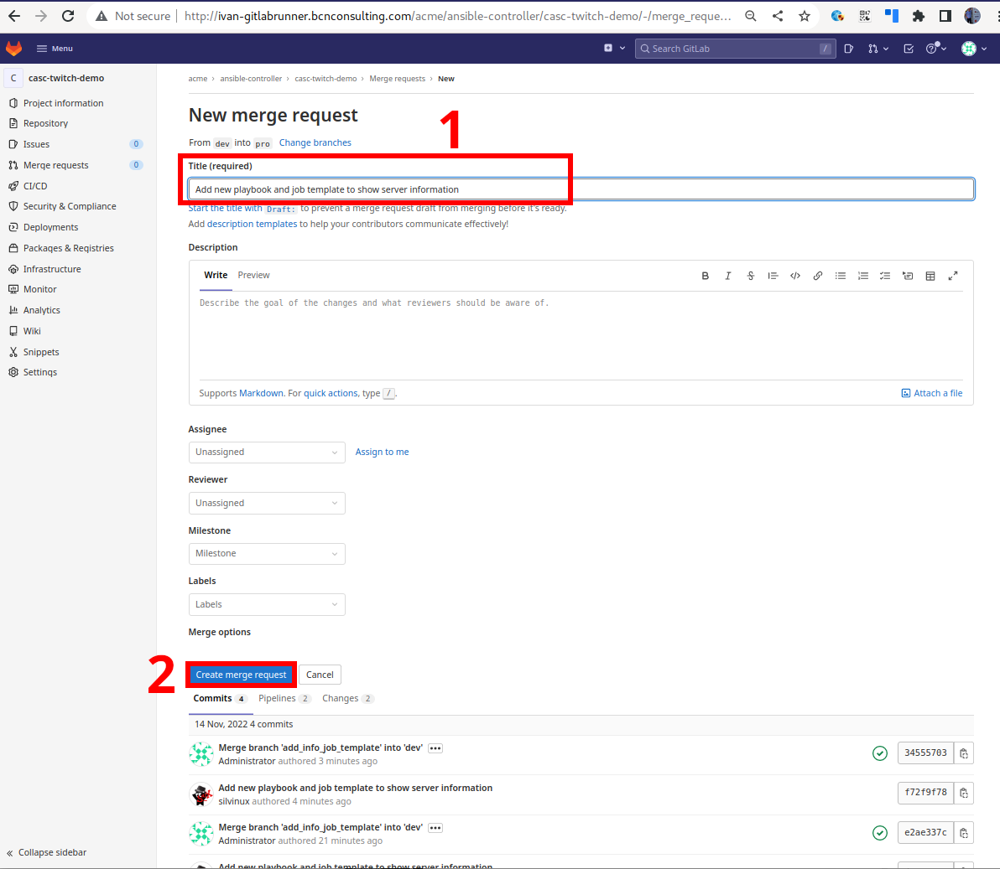
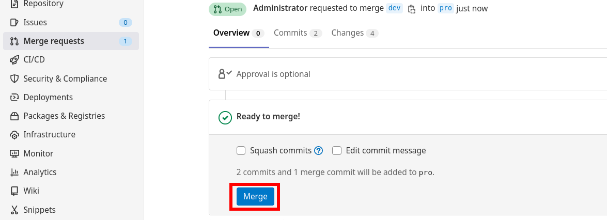

Regular User
The SuperAdmin user has created all the objects needed for the new regular organization.
The credentials to access the Automation Controller by the new regular organization’s administrator account has been provided to the correct people.
All the following steps will be performed by the new organization’s administrator user, who also have access to the GitLab repository created to contain all the organizations' objects.
All the steps described here are also available in the README.md file at the new organization’s GitLab repository.
1. Export all the variables to be used in the next steps
| These variables are undefined when you close your terminal session, so they need to be populated each time you open a new terminal. |
<CHANGE_ME> has to be customizedexport ORGNAME='<CHANGE_ME>'
export PROJECT_URL_CASC='<CHANGE_ME>'
export SSH_PRIVATE_KEY_FILE='<CHANGE_ME>'
export GITLAB_USERNAME='<CHANGE_ME>'
export GITLAB_EMAIL='<CHANGE_ME>'
export VAULT_PASSWORD='<CHANGE_ME>'
# export GITLAB_API_TOKEN='<CHANGE_ME>'
# export AAP_USER_NAME='<CHANGE_ME>'
# export AAP_USER_PASSWORD='<CHANGE_ME>'
# export AAP_USER_EMAIL='<CHANGE_ME>'
# export AAP_USER_FIRSTNAME='<CHANGE_ME>'
# export AAP_USER_LASTNAME='<CHANGE_ME>'
# export ADMIN_DEV_PASSWORD='<CHANGE_ME>'
# export ADMIN_PRO_PASSWORD='<CHANGE_ME>'Where:
-
ORGNAME: Organization name
-
PROJECT_URL_CASC: Project URL (SSH format)
-
SSH_PRIVATE_KEY_FILE: the private SSH key file that corresponds to the public SSH key attached to your gitlab account (see prerequisites).
-
GITLAB_USERNAME: GitLab user name
-
GITLAB_EMAIL: GitLab user email address
-
VAULT_PASSWORD: Ansible Vault password
2. Clone the repository and create a new branch
|
All the steps could also be done creating/editing the files directly at the GitLab repository using the Web UI, but this approach is not recommended as a general option. Instead of this, use a local copy of the repository to work there. |
ssh-add ~/.ssh/id_rsa_gitlab
git clone ${PROJECT_URL_CASC}
cd ${ORGNAME}/
git config user.email "${GITLAB_EMAIL}"
git config user.name "${GITLAB_USERNAME}"
git checkout -b casc-dev-day0Create a SSH key pair for GitLab:
Enable an already existing SSH key the repository:
Before using CasC as a GitOps approach, it is needed to launch an initialization from CLI which it is called Day-Zero.
4. Edit credentials to connect to the controller for day zero.
The default credentials for the new organization admin user are similar to the following ones:
username: org1admin # <ORGNAME>admin
password: initialadminpassvi group_vars/dev/configure_connection_controller_credentials.ymlvi group_vars/pro/configure_connection_controller_credentials.ymlansible-vault encrypt --vault-password-file .vault_password \
group_vars/dev/configure_connection_controller_credentials.yml \
group_vars/pro/configure_connection_controller_credentials.yml5. Edit credentials objects
vi orgs_vars/${ORGNAME}/env/dev/controller_credentials.d/controller_credentials.ymlvi orgs_vars/${ORGNAME}/env/pro/controller_credentials.d/controller_credentials.ymlansible-vault encrypt --vault-password-file .vault_password \
orgs_vars/${ORGNAME}/env/pro/controller_credentials.d/* \
orgs_vars/${ORGNAME}/env/dev/controller_credentials.d/*6. Check the inventory file
cat inventory[dev]
aap22dev.iam.lab
[pro]
aap22prod.iam.lab7. Launch ansible-navigator from CLI to setup day-zero of CasC
This step is needed for the day-zero, and is also useful when developing new changes, to apply them without pushing them to the GitLab repository and trigger the CaC workflow.
|
If the Automation Hub where the used Execution Environment image is using a self-signed certificate, the extra argument |
ansible-navigator run casc_ctrl_config.yml -i inventory -l dev -e "{orgs: '${ORGNAME}', dir_orgs_vars: orgs_vars, env: dev}" -m stdout --eei quay.io/automationiberia/aap/ee-casc --vault-password-file .vault_passwordansible-navigator run casc_ctrl_config.yml -i inventory -l pro -e "{orgs: '${ORGNAME}', dir_orgs_vars: orgs_vars, env: pro}" -m stdout --eei quay.io/automationiberia/aap/ee-casc --vault-password-file .vault_password8. Push the changes
git status -s
git add -A
git commit -m "CasC day zero"
git push origin casc-dev-day09. Promote the casc-dev-day0 branch to dev (dev branch)
|
In order for the GitLab Actions to run successfully, a GitLab Runner must be configured for the GitLab project, following the same steps described here. |
-
Select the source branch as
casc-dev-day0anddevas the destination one -
Fill in the merge request information
 -
Approve the Merge Request.
 -
Check that the Merge Request has triggered the CasC Job at the
DEVController:
10. Promote the dev branch to pro (pro branch)
-
Select the source branch as
devandproas the destination one -
Fill in the merge request information

|
Be sure to write a title that have sense for the Merge Request: The default value here is |
-
Approve the Merge Request.
